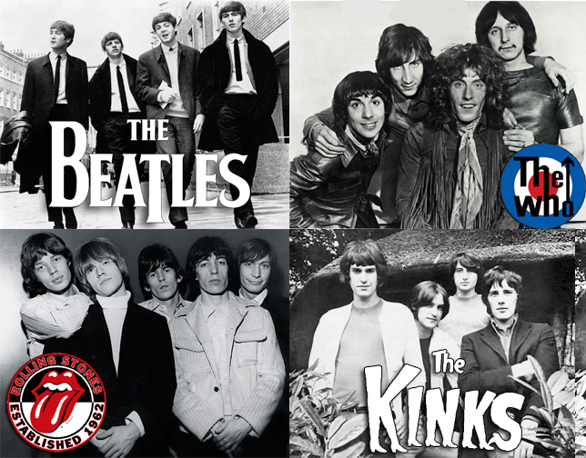

The Birth of Rock and Roll (Mid-1950s)

This period marks the blending of rhythm and blues (R&B), country, and gospel into what we now call rock and roll. The genre broke racial and cultural barriers and created the blueprint for modern popular music.
A key moment was the release of “Rock Around the Clock” by Bill Haley & His Comets in 1954–1955, and the rise of Elvis Presley, Chuck Berry, Little Richard, and Buddy Holly.
The British Invasion (1964)
The Beatles, along with other British bands like The Rolling Stones and The Who, redefined rock music, emphasizing songwriting, studio experimentation, and international popularity.
This event globalized rock music and pushed it from simple pop singles to more sophisticated, album-oriented artistry.
Woodstock Festival (1969)
TThe Woodstock Music & Art Fair was a 3-day festival of peace, music, and counterculture, featuring Jimi Hendrix, Janis Joplin, The Who, and more.
Woodstock symbolized rock music’s power as a force for social change, unity, and anti-war activism during a time of political upheaval.